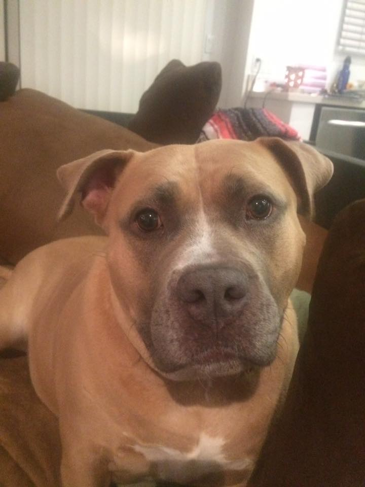
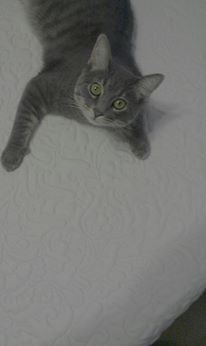

Appa
About me!
Hello world! My name is Appa, and I am very excited to get to tell you a little about me and my life. I was adopted by my humans three years ago and they think I am about 7 years old. I have two adopted brothers, Sherlock and Watson, who look an aweful lot like cats, but that's OK because they are still awesome. I am a
 What kind of Pitbull am I??
What kind of Pitbull am I??
A lot of people don't know that there are a lot of kinds of Pitbulls. With four major groups being American Stafforshire Terrier, American Pit Bull Terrier, Stafforshire Bull Terrier (My favorite), American Bull Dog, and Bull Terrior. And to make matters more complicated there are a lot of sub-breedas of each of these! To find out more jump over to the Pitbulls section or for some outside reading you can always go to HERE
My Furry Family
Watson
This is Watson, and though he was the first pet my humans had he is actually the youngest. You will get to know more about him later in the Watson part of My Favorite Things
Sherlock

My humans call this loveable guy Sherlock, I call him my best friend in the whole wide world. Me and this guy are inseperable and love to play together. You can find more about him in Sherlock part of My Favorite Things